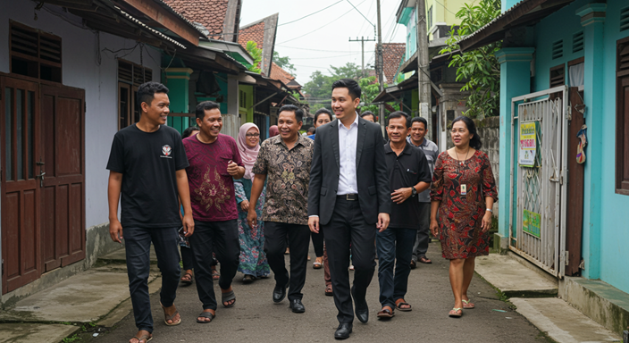

Anda di fitnah menjadi Pelaku kasus hukum di Brebes, Tegal, dan Purwokerto

Panduan Hukum Jika Saya Menjadi Terduga Pelaku Kasus Pidana di Brebes, Tegal, dan Purwokerto
Menjadi terduga pelaku dalam kasus pidana adalah situasi yang serius dan memerlukan pemahaman yang jelas mengenai hak-hak Anda dan prosedur hukum yang harus dilalui. Di Indonesia, setiap orang yang terlibat dalam kasus pidana, baik sebagai korban maupun terduga pelaku, memiliki hak-hak yang dijamin oleh hukum, dan terduga pelaku pun berhak mendapatkan perlindungan hukum yang adil.
Jika Anda tinggal di Brebes, Tegal, atau Purwokerto dan menjadi terduga pelaku dalam kasus pidana, berikut adalah informasi yang perlu Anda ketahui mengenai hak-hak Anda dan proses hukum yang akan Anda jalani.
I. Hak Terduga Pelaku dalam Kasus Pidana di Indonesia
Sebagai terduga pelaku dalam kasus pidana, Anda memiliki hak-hak tertentu yang dijamin oleh hukum Indonesia. Memahami hak-hak ini sangat penting untuk memastikan proses hukum berjalan dengan adil dan transparan.
a. Hak untuk Didampingi Pengacara
Di Indonesia, Anda berhak untuk didampingi oleh pengacara dalam setiap tahap proses hukum. Ini termasuk selama penyidikan dan persidangan. Pengacara bertugas untuk memberikan bantuan hukum, memastikan bahwa hak Anda terlindungi, dan membantu Anda dalam menyusun strategi pembelaan yang tepat.
b. Hak untuk Diam Selama Penyidikan
Salah satu hak penting yang Anda miliki adalah hak untuk tidak memberikan keterangan yang memberatkan diri sendiri. Anda tidak wajib menjawab pertanyaan yang diajukan oleh penyidik yang dapat memperburuk posisi Anda. Hak ini dilindungi oleh prinsip silence yang diatur dalam hak asasi manusia di Indonesia.
c. Hak untuk Mendapatkan Pembelaan Hukum yang Adil
Sebagai terduga pelaku, Anda berhak mendapatkan pembelaan hukum yang adil selama proses pengadilan. Ini termasuk hak untuk mengajukan pembelaan, hak untuk diadili secara adil oleh pengadilan yang tidak bias, dan hak untuk mendapatkan keputusan yang sah berdasarkan bukti yang ada.
II. Proses Hukum Bagi Terduga Pelaku Pidana di Indonesia
Jika Anda terduga pelaku dalam kasus pidana, Anda akan melewati beberapa tahapan hukum yang telah diatur dengan rinci dalam Kitab Undang-Undang Hukum Acara Pidana (KUHAP). Berikut adalah tahapan yang akan Anda hadapi:
a. Penyidikan
Penyidikan adalah tahap pertama dalam proses hukum pidana. Pada tahap ini, pihak kepolisian atau penyidik akan mengumpulkan bukti dan melakukan pemeriksaan terhadap Anda sebagai terduga pelaku. Penyidik akan memanggil Anda untuk memberikan keterangan dan mencari bukti yang mendukung tuduhan terhadap Anda.
b. Penahanan
Jika ada cukup bukti yang menunjukkan keterlibatan Anda dalam kasus pidana, Anda mungkin akan dikenakan penahanan. Penahanan ini bertujuan untuk mencegah Anda melarikan diri atau menghalangi jalannya proses penyidikan. Namun, penahanan hanya boleh dilakukan berdasarkan keputusan pengadilan.
c. Penuntutan
Setelah tahap penyidikan selesai, berkas perkara akan diserahkan kepada kejaksaan untuk dilakukan penuntutan. Jaksa akan menilai apakah kasus ini layak untuk diteruskan ke pengadilan atau tidak.
d. Persidangan
Jika berkas perkara dilanjutkan ke pengadilan, Anda akan diadili dalam persidangan pidana. Selama persidangan, jaksa akan membacakan tuntutan, sementara Anda dan pengacara akan menyampaikan pembelaan. Hakim kemudian akan memutuskan apakah Anda bersalah atau tidak dan menjatuhkan hukuman sesuai dengan ketentuan yang berlaku.
III. Pengacara Pidana di Brebes, Tegal, dan Purwokerto
Jika Anda terduga pelaku pidana, salah satu langkah pertama yang harus Anda ambil adalah mencari pengacara pidana yang berpengalaman untuk membantu Anda. Pengacara pidana akan memberikan bantuan hukum yang sangat dibutuhkan, mulai dari tahap penyidikan hingga persidangan.
a. Menyusun Strategi Pembelaan
Pengacara pidana yang berpengalaman akan membantu Anda untuk menyusun strategi pembelaan yang tepat. Strategi ini dapat mencakup pembuktian bahwa Anda tidak bersalah, bahwa bukti yang ada tidak cukup kuat, atau bahwa tindakan Anda tidak memenuhi unsur pidana yang dituduhkan.
b. Menjelaskan Proses Hukum
Pengacara juga akan menjelaskan proses hukum yang akan Anda jalani, mulai dari penyidikan hingga persidangan. Pengacara akan memastikan Anda memahami setiap tahap yang akan dilalui dan langkah-langkah yang harus Anda ambil.
c. Perlindungan Hak Anda
Pengacara pidana akan memastikan bahwa hak-hak Anda terlindungi selama proses hukum. Mereka akan memastikan bahwa tidak ada pelanggaran terhadap hak Anda selama penyidikan atau persidangan.
IV. Bukti-Bukti yang Diperlukan dalam Kasus Pidana
Dalam kasus pidana, bukti adalah elemen kunci untuk membuktikan apakah Anda bersalah atau tidak. Sebagai terduga pelaku, Anda perlu memahami jenis-jenis bukti yang diperlukan untuk membela diri Anda. Bukti ini dapat berupa:
a. Bukti Fisik
Bukti fisik bisa berupa barang bukti yang ditemukan di tempat kejadian perkara atau barang yang berkaitan langsung dengan kejahatan yang dituduhkan. Misalnya, senjata, dokumen, atau rekaman video yang bisa menunjukkan keterlibatan Anda.
b. Bukti Saksi
Saksi yang melihat langsung kejadian atau yang mengetahui kejadian tersebut dapat memberikan keterangan yang membantu membela Anda atau membuktikan bahwa Anda tidak terlibat dalam kejahatan yang dituduhkan.
c. Bukti Dokumen
Dokumen-dokumen seperti kontrak, surat-surat, atau catatan yang relevan dengan kasus dapat digunakan sebagai bukti dalam persidangan untuk mendukung pembelaan Anda.
d. Bukti Elektronik
Di era digital ini, bukti berupa rekaman digital (seperti rekaman CCTV, percakapan elektronik, atau data ponsel) dapat digunakan untuk membuktikan ketidakbersalahan Anda.
V. Proses Pembelaan dalam Persidangan Pidana
Jika kasus Anda dilanjutkan ke pengadilan, proses persidangan pidana akan memberikan kesempatan bagi Anda untuk membela diri. Berikut adalah tahapan persidangan dan cara Anda bisa memberikan pembelaan:
a. Tuntutan Jaksa
Jaksa Penuntut Umum akan memulai persidangan dengan membacakan tuntutan terhadap Anda. Tuntutan ini akan berisi tuduhan yang diajukan berdasarkan bukti yang ada. Sebagai terduga pelaku, Anda berhak untuk membantah tuduhan tersebut.
b. Pembelaan dari Pengacara
Pengacara Anda akan menyampaikan pembelaan hukum untuk menunjukkan bahwa Anda tidak bersalah atau untuk mengurangi kesalahan yang dilakukan. Pembelaan ini bisa mencakup pengungkapan kekurangan dalam bukti, ketidaksesuaian dalam prosedur hukum, atau alasan lain yang bisa membuktikan bahwa Anda tidak terlibat dalam kejahatan.
c. Keputusan Hakim
Setelah mendengarkan semua argumen dan bukti yang disampaikan selama persidangan, hakim akan memutuskan apakah Anda bersalah atau tidak. Jika Anda terbukti tidak bersalah, hakim akan memutuskan untuk membebaskan Anda. Jika Anda terbukti bersalah, hakim akan menjatuhkan hukuman sesuai dengan hukum yang berlaku.
VI. Apa yang Harus Dilakukan Jika Terduga Pelaku Pidana Diinterogasi Polisi?
Jika Anda ditahan atau diinterogasi oleh polisi, sangat penting untuk mengetahui hak-hak Anda. Berikut adalah langkah-langkah yang harus Anda ambil untuk melindungi diri Anda selama proses interogasi:
a. Hak untuk Diam
Sebagai terduga pelaku pidana, Anda memiliki hak untuk tidak menjawab pertanyaan yang dapat mempersulit posisi Anda. Anda tidak diwajibkan untuk memberikan pernyataan yang bisa memberatkan diri sendiri.
b. Hak untuk Didampingi Pengacara
Anda berhak untuk didampingi oleh pengacara selama proses interogasi. Pengacara dapat memastikan bahwa Anda tidak diintimidasi dan bahwa proses interogasi dilakukan dengan benar sesuai dengan prosedur hukum.
c. Jangan Menandatangani Apa Pun Tanpa Pengacara
Jika Anda diminta untuk menandatangani dokumen atau pernyataan selama interogasi, jangan lakukan itu tanpa berkonsultasi terlebih dahulu dengan pengacara Anda. Pengacara akan membantu Anda memahami isi dokumen dan memastikan Anda tidak dirugikan.
Kesimpulan
Menjadi terduga pelaku dalam kasus pidana adalah situasi yang penuh tekanan, namun dengan pemahaman yang baik tentang hak-hak Anda dan proses hukum yang akan dihadapi, Anda dapat memastikan bahwa proses hukum berjalan dengan adil. Di Brebes, Tegal, atau Purwokerto, sangat penting untuk memiliki pengacara pidana yang berpengalaman yang dapat membantu Anda melalui proses hukum dengan melindungi hak-hak Anda. Pastikan Anda memahami hak untuk didampingi pengacara, hak untuk diam selama penyidikan, dan hak untuk mendapatkan pembelaan yang adil di pengadilan. Dengan demikian, Anda dapat memastikan bahwa proses hukum berjalan dengan transparansi dan keadilan.
Jika butuh bantuan konsultasikan kepada kami gratis lewat WA di 081330723891 Atau 081330723891